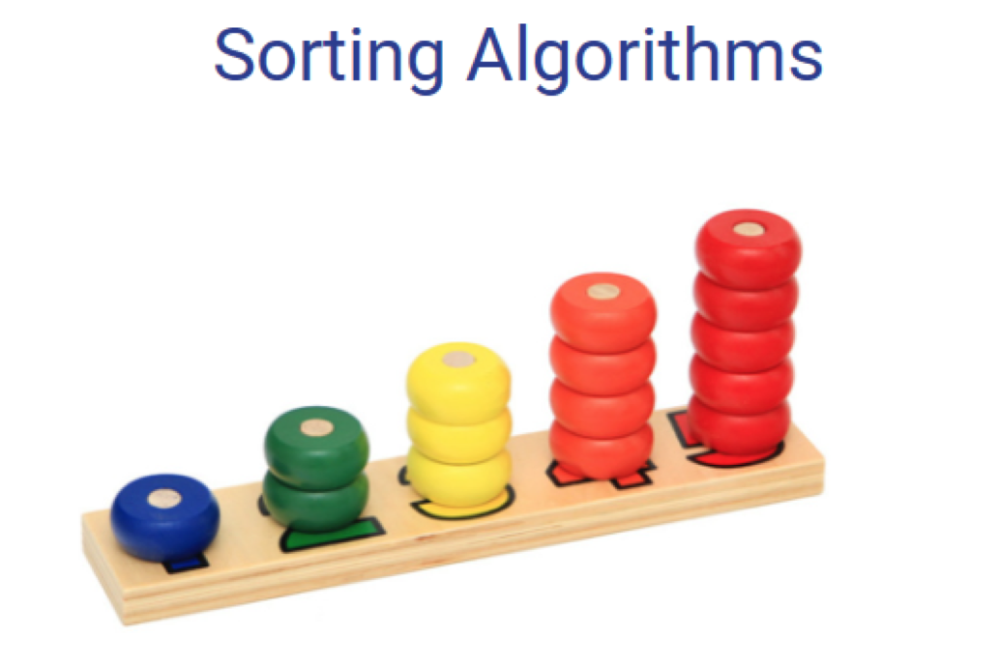
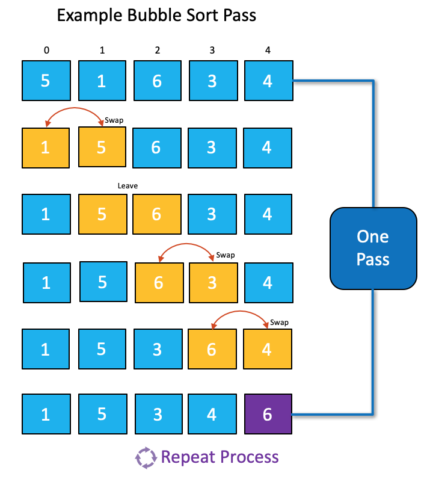
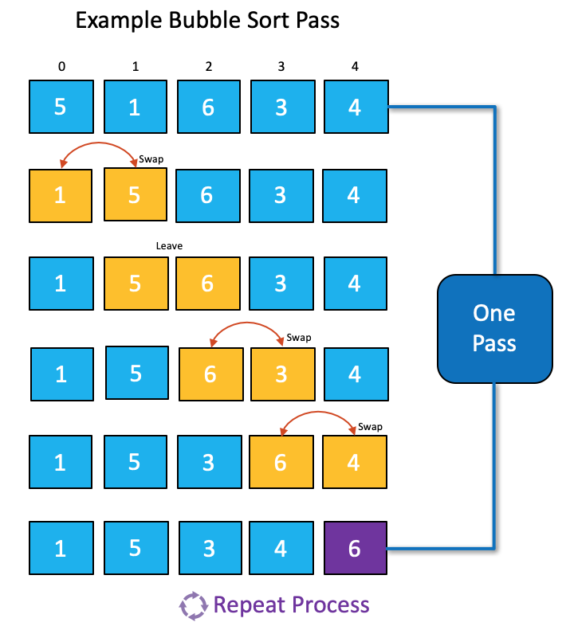
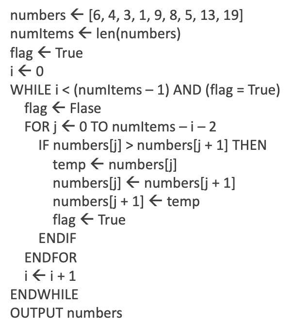
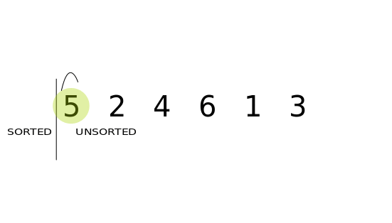
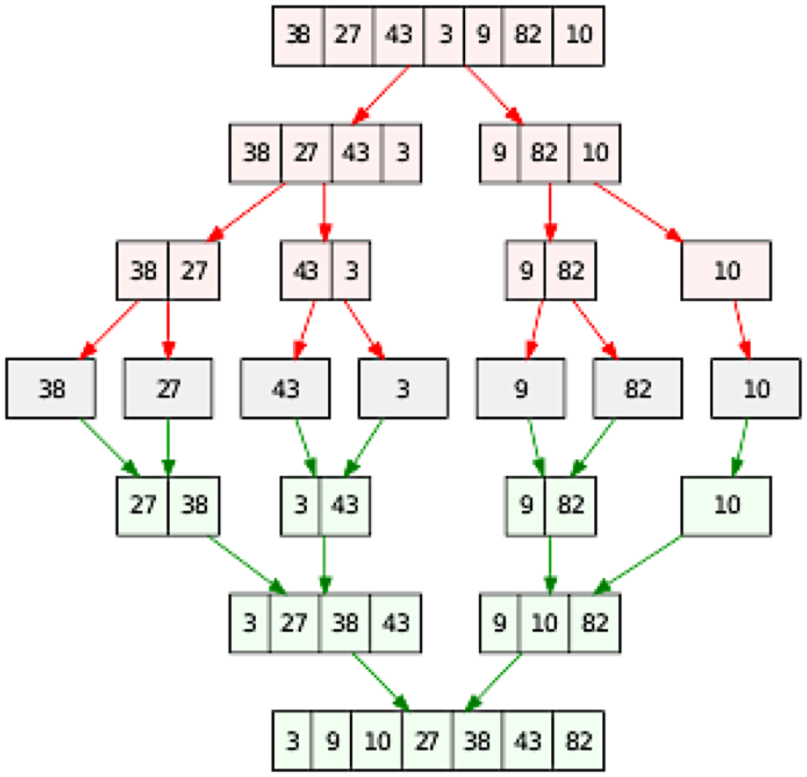
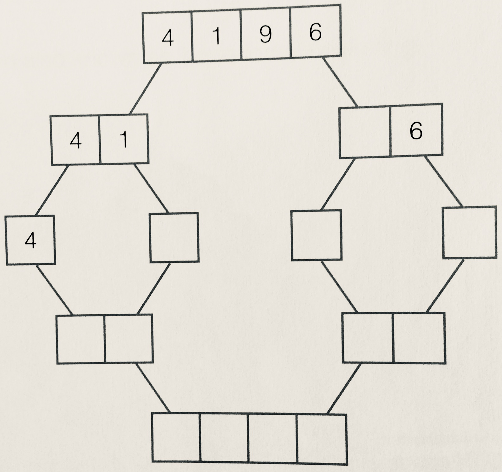

3.1.4 Sorting Algorithms
Table of Contents
1 Sorting Algorithms
Learn It: What are Sorting Algorithms?
Sorting Algorithms are used to arrange data within a list into a defined order. Whether that be numerical order, alphabetical order or chronological order, ascending (A-Z) or descending (Z-A).
- When sorting data items it is essential to
comparethem with each other, so that they can beputinto thecorrect order. - There may be millions of items of data to compare, so sorting
algorithms must carry out the task as efficiently as possible, so
as not to cause a
bottleneck(Another part of the program may not be able to run until the sorting has been carried out).

- Searching and Sorting Algorithms are used in lots of programs to
make
data easiertoaccessandunderstand. - Computer game leader boards are
sortedfrom the highest score to the lowest score to make it easy to find the winner and your position in the list.
Key Term - Compare: Assess how items of data are similar or different to each other, to help decide which order they should go in.
Key Term - Adjacent Items: Items of data that are next to each other.
- In the last topic we learned about searching algorithms and how they are used to search for data.
- In this topic we will look at sorting algorithms, there are many
different sorting algorithms, but we will only be looking at two of
them:
- Bubble Sort.
- Merge Sort.
2 Bubble Sort Algorithm
Learn It: What is a Bubble Sort?
Bubble Sort - A bubble sort works by repeatedly going through the list to be sorted comparing each pair of adjacent elements. If the elements are in the wrong order they are swapped, if not, move on to the next pair.
 Bubble Sort Explained

Bubble Sort Explained

- Step 1: Compare the first two items in the list. If they are in the correct order, leave them. If items are not in the correct order, swap them. In the example above '5' is larger than '1', so they need to be swapped.
- Step 2: Repeat the step 1 process for items '2' and '3' in the list. In the example above '5' is smaller than '6', so they do not need to be swapped.
- Step 3: Continue applying the step 1 process to the rest of the items in the list.
- Once one pass is completed, repeat the process again and again until no swaps are required and all the numbers are in the correct order.
- A Bubble Sort is likely to require muliple passes through the list, so it can be inefficient and unsuitable for larger files.
Bubble Sort Algorithm Video
Algorithm for a Bubble Sort
- In this algorithm,
numberis in alistholding nine numbers. - Each
elementof the list is referred to using anindexin square brackets. - In the list below, the first element of the list is '6' and is at
index position [0], and the last element of the list is '19' and is atindex position [8].

- We use the flag variable to set False at the beginning of each pass. As soon as a swap is made, the flag is set to True.
- If a pass is completed without any swaps being made, the flag remains Flase and the WHILE loop ends. The sort is complete.
Badge It: Bubble Sort Algorithm
Silver: Complete the Bubble Sort Algorithm shown in the Trinket window below:
- Upload to Algorithms - Sorting Algorithms: Silver on BourneToLearn
3 Merge Sort Algorithm
Learn It: What is a Merge Sort?
Merge Sort - Is a 'Divide and Conquer' algorithm that splits a list into discrete elements and then merges the elements back together in order. A merge sort is quicker and more efficient than a bubble sort when using longer lists. However, it uses more memory and can take longer to sort shorter lists.
 Merge Sort Explained 
- Step 1: Split the list in half to create two subsets.
- Step 2: Continue to split the subsets in half, until only individual items remain.
- Step 3: Merge individual items back together in pairs, putting them back together in order.
- Step 4: Continue to merge the pairs together, with each subset being sorted in order.
- Step 5: Once all subsets have been combined, the list should be in the correct order.
Merge Sort Algorithm Video
- Note: You would not be expected to code a merge sort in Python, but you should be able to explain how the sorting algorithm works.
- In the Trinket window below is an example of a merge sort, try it to see how it splits the list into subsets and then merges them back together in the correct order.
Badge It: Exam Questions
Gold: Answer the following exam questions:
- Which of the following processes describes a merge sort?
- (a) Repeatedly splits the data in half until each 'list' contains only a single data item. Then, having broken it into smaller parts, repeatedly combines these 'lists' back together, this time putting them in their required order (Ascending or Descending in value).
- (b) Compares the first two items, checks which one is larger and swaps them if necessary so that the larger is first. Then it checks the next pair, and so on.
- Use a bubble sort to sort the dataset [6, 2, 4, 1, 8] in ascending order. Show your working and state the number of steps required.
- Complete the merge sort example shown below:

- Upload to Algorithms - Merge Sort: Gold on BourneToLearn
4 Comparing Bubble and Merge Sorting Algorithms
Learn It: Pro's and Con's of each sort?
Bubble Vs Merge Sort Algorithms
| Bubble Sort | Merge Sort |
|---|---|
| + Simplest and easiest to code | + Far more efficient and fast |
| + Uses less memory | + Consistent running time |
| - Slower with larger lists | - Uses more memory |
| - Inefficient and slow | - More complexed to program |
The bubble sort algorithm is very slow and inefficient for sorting more than a very few items. As previously seen, that even with a list of just eight items, seven passes of the dataset was required to complete the sort. On each pass, it is likely that some items will need to be swapped. You can imagine how long it would take to sort a million items using a bubble sort! Roughly speaking, to sort n items will need n^2 comparisons.
In contrast, the merge sort, rather like the binary search, works by successively halving the dataset. In this algorithm, this operation is repeated until each sublist is only one item long. Then the sublists are merged back together. This is a much more efficient process than the bubble sort as it takes much less time to execute.
The merge sort has its disadvantages, as it is more difficult and complexed to implement. Another disadvantage is that it requires more memory to store the sublists, which can be a problem with a very large list. We have looked at two algorithms for sorting a list. In each case, either of the algorithms can be used to solve the problem, but one algorithm is much more efficient.